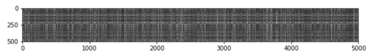

CS231n 课程笔记
Table of Contents
计算机视觉历史介绍 上
介绍了猫看任何图片没有反应，但是在切换幻灯片的过程中，却能刺激到它。
计算机视觉历史介绍 中
David Marr 视觉是分层的。第一层应该是边缘结构。 Generalized Cylinder 模型。主旨整个世界都是由简单的形状组成。 多样性感知分组是视觉领域最为重要的问题。我们看一个物体不会是看到像素这个级别，而是会把像素分类。 这个问题现在并没有完美的解决。
有一个非常赞的成果叫 Viola Jones Face Detector。 https://en.wikipedia.org/wiki/Viola–Jones_object_detection_framework https://allenlu2007.wordpress.com/2016/05/05/人臉偵測-face-detection-算法/ http://www.vision.caltech.edu/html-files/EE148-2005-Spring/pprs/viola04ijcv.pdf
在 2012 年的 ImageNet 比赛中，卷积神经网络的使用使得图像识别的成功率大大提高。这成了深度学习兴起的开端。
图像分类，物体检测。
CNN 卷积神经网络只是深度学习框架的一种。
图像分类
图像分类器
图像分类就是通过输入一个图片然后预测一个对应的标签。 图像通过 3 维表示，L * W * 3。分别表示长宽，其中的 3 表示 RGB 中 3 基色。 这种问题不是很容易解决，其中面临很多的挑战。
- 不同视角下的影响
- 体型或大小的不同
- 各种的变形。例如，猫的例子。
- 物体的一部分可见，其他被遮挡
- 光线的影响
- 背景的影响
- 一个大的物体又会有几个小的分类组成
这个问题，如果我们通过传统的方式，很难找到一个非常完美的方式去实现。其中，一个可能的做法是去识别物体的边界，然后去判断，但是如果换了一个物体又得重新做。 现在有一个比较好的方式。
数据驱动
这个过程的步骤如下：
- 收集图片及其标签的数据集
- 使用机器学习去训练分类器
- 计算新图像的分类
最邻近分类器
这个方式在现实中很少使用，但是它能给我们一个实现的方式去分类图片。 我们将两个图片表示为 \(I_1, I_2\) 两个向量。一个比较合适的方式是计算他们的 L1 距离 。
L1 距离，又叫做曼哈顿距离。
\begin{align} d_1 (I_1, I_2) = \sum_{p} \left| I^p_1 - I^p_2 \right| \end{align}例如。

下面我们需要看下 python 代码。下载 下载这个压缩包后，对应的 knn.ipynb 就是这个部分的代码指导。
# 这个和数据中的标签名对应 classes = ['plane', 'car', 'bird', 'cat', 'deer', 'dog', 'frog', 'horse', 'ship', 'truck'] num_classes = len(classes) samples_per_class = 7 for y, cls in enumerate(classes): idxs = np.flatnonzero(y_train == y) # 每个分类随机选出7个图片 idxs = np.random.choice(idxs, samples_per_class, replace=False) for i, idx in enumerate(idxs): plt_idx = i * num_classes + y + 1 # 设置图片位置 plt.subplot(samples_per_class, num_classes, plt_idx) plt.imshow(X_train[idx].astype('uint8')) # plt.imshow(np.uint8(X_train[idx])) 也可以 # 目的都是一样的如果不把数据转化为 uint8，显示时可能会有奇怪的结果。 plt.axis('off') if i == 0: # 设置每一个分类的title plt.title(cls) plt.show()
下面是运行的结果。

为了加快训练，做些简化。只选取 5000 个训练集，以及 500 个测试集。
# Subsample the data for more efficient code execution in this exercise num_training = 5000 mask = list(range(num_training)) print(mask[1]) X_train = X_train[mask] y_train = y_train[mask] num_test = 500 mask = list(range(num_test)) X_test = X_test[mask] y_test = y_test[mask]
为了计算上面公式定义的距离，我们先把数据转化为 2 维的。
X_train = np.reshape(X_train, (X_train.shape[0], -1)) X_test = np.reshape(X_test, (X_test.shape[0], -1)) print(X_train.shape, X_test.shape) # 结果：(5000, 3072) (500, 3072)
其中 3072 = 32 * 32 * 3 的结果。
KNN 算法
KNN 叫做 K Nearest Neighbor。 这里有两个过程。
- 计算所有测试和训练数据的距离
- 通过上面的数据，找到 k 个距离最近的训练样本，然后对测试数据标签进行投票，最多的标签个数就是测试样例的标签。
from cs231n.classifiers import KNearestNeighbor # Create a kNN classifier instance. # Remember that training a kNN classifier is a noop: # the Classifier simply remembers the data and does no further processing classifier = KNearestNeighbor() classifier.train(X_train, y_train)
dists = classifier.compute_distances_two_loops(X_test)
这个距离是通过 L2-distance (euclidean distance )，也即是欧几里得距离算出来的。
\begin{align} d_2 (I_1, I_2) = \sqrt{\sum_{p} \left( I^p_1 - I^p_2 \right)^2} \end{align}dists[i][j] = np.sqrt( np.sum(np.square(X[i, :] - self.X_train[j, :])))
我们可以把这个距离用图像表示出来。
plt.imshow(dists, interpolation='none') plt.show()
结果如下。
 其中黑色表示距离近，比较亮的部分距离比较远。
预测
我们找到最近的 k 个样例的 label，然后取个数最多的一个。
for i in xrange(num_test): # A list of length k storing the labels of the k nearest neighbors to # the ith test point. closest_y = [] # 排序 idx = np.argsort(dists[i, :], axis=0) # 取前k个最小的数据 closest_y = self.y_train[idx[:k]] # 找到个数出现最多的标签 y_pred[i] = np.argmax(np.bincount(closest_y))
最后我们可以得到预测的成功率，不同的 k 值影响还是很大的。k=10 是一个比较好的数值。
y_test_pred = classifier.predict_labels(dists, k=10) # Compute and print the fraction of correctly predicted examples num_correct = np.sum(y_test_pred == y_test) accuracy = float(num_correct) / num_test print('Got %d / %d correct => accuracy: %f' % (num_correct, num_test, accuracy))